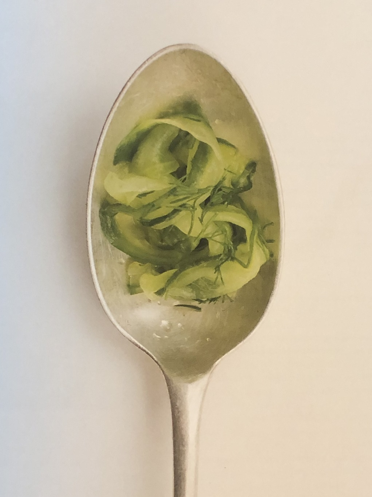

Chilled Pickled Cucumbers
1 serving — 30 minutes
Best served fresh, this quick pickle is great with maritime flavors like panko-crusted jackfruit or battered banana blossom, or as part of a picnic spread with vegan egg mayonnaise.
- cucumber1
 saltgenerous pinch
saltgenerous pinch rice vinegar2 teaspoons
rice vinegar2 teaspoons- fresh dill1 teaspoon, chopped
Ingredients
Method
Peel the cucumber into strips, discarding the seeded centre (a Y-shaped peeler is perfect for this, but a sharp knife will do). Sprinkle with the salt and set aside for five minutes, then squeeze the cucumber to remove excess liquid. Add the vinegart and dill and refrigerate for at least 30 minutes or until ready tro serve.
Variations
Change up the flavours and spicing by adding chili flakes, crushed pink peppercorns, or coriander seeds, or experiment with your own favorite spices.